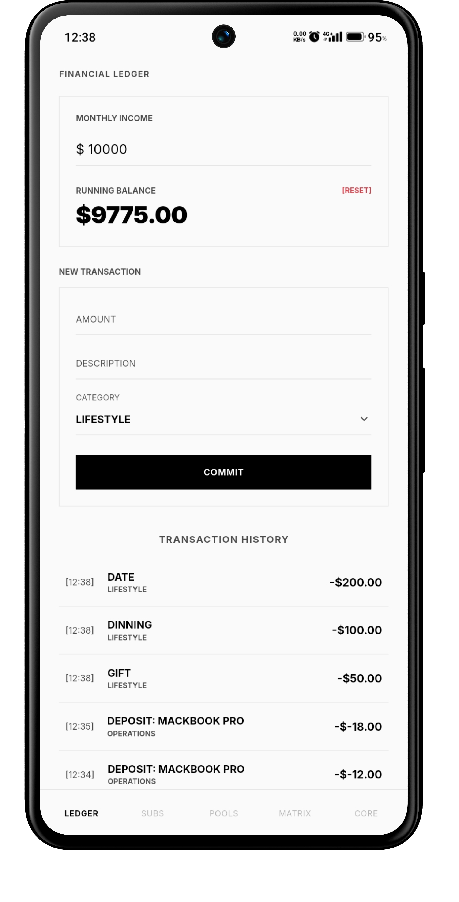
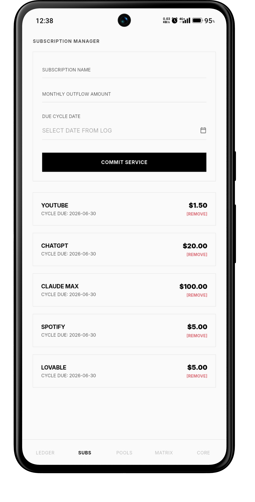
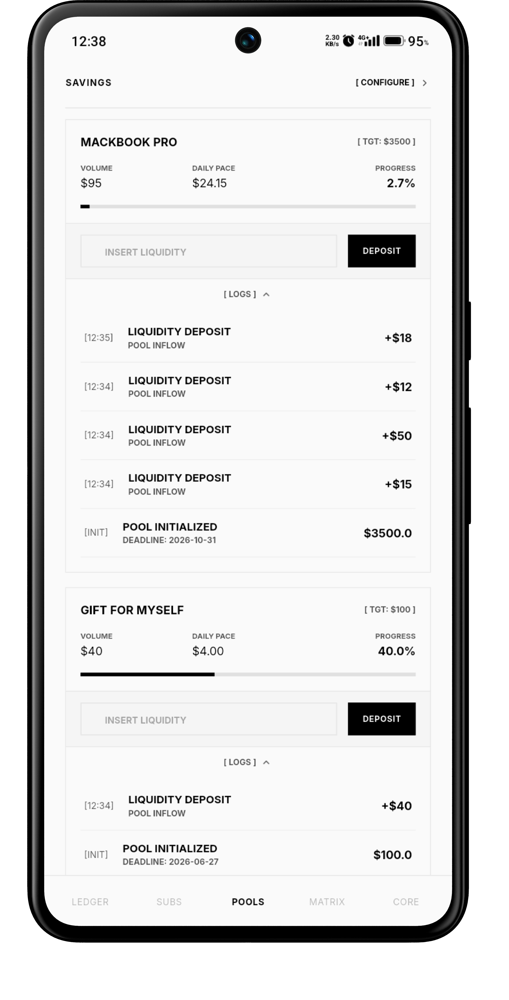
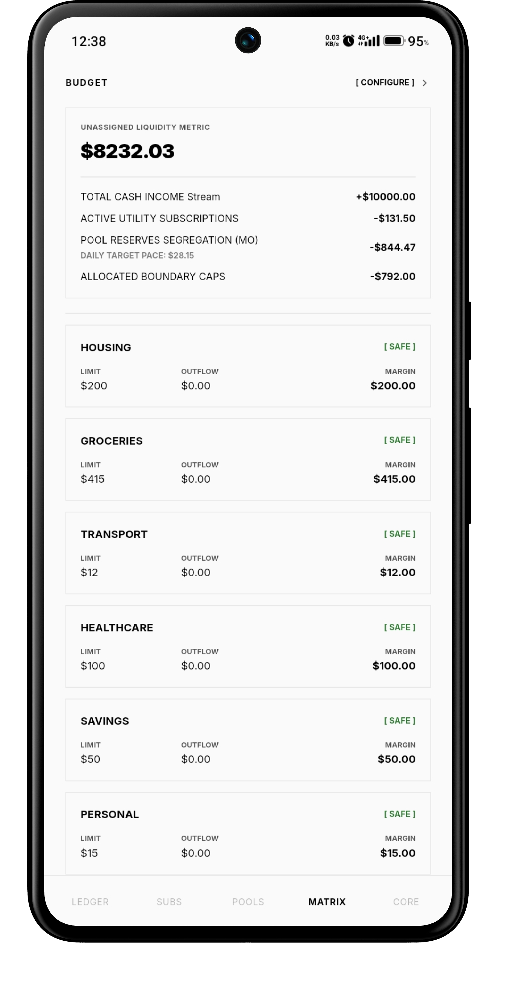

01EXPENSE
PRIVATE FINANCE / OFFLINE-FIRST
Money tracking
without the noise.
Exomic keeps expenses, subscriptions, savings goals and budgets on your device. No cloud-sync dependency. No analytics layer. Just the numbers you care about.

04CORE WORKSPACES
AES-256LOCAL ENCRYPTION
0CLOUD DATA DEPENDENCIES
1CONNECTED MONEY VIEW
THE PRODUCT
Every screen,
designed to disappear.
Exomic uses four core workspaces: the financial ledger, recurring subscriptions, savings pools and category budgets. Each stays focused on one job, while local state updates keep the picture connected.
01 / CORE SCREENS
Four tabs.
One financial picture.
Settings stays outside the product showcase. The four working tabs are the experience.
Log the outflow.
02SUBSCRIPTION
Track recurring charges
and renewal dates.

03SAVING
Turn a target into
a daily pace.

04BUDGET
See category limits
before they break.

02 / EVERYTHING YOU NEED
Everything you need.
Nothing you don't.
WORKSPACEWHAT IT DOESWHY IT MATTERS
EXPENSEChronological transaction history with a rolling monthly total.See current spending in one place.
SUBSCRIPTIONRecurring costs with renewal dates and active status.Keep fixed drains visible.
SAVINGTarget balances, deadlines and daily pace calculations.Turn long-term goals into a concrete next step.
BUDGETCategory caps, outflows, margins and breach state.Make overspend visible immediately.
03 / THE CONNECTION
One financial view,
kept in sync.
Exomic links local providers so a new transaction can update the ledger, budget tracking and related calculations without a full-screen reload.
UNASSIGNED LIQUIDITY
$1,810.00
INCOME − SUBSCRIPTIONS − SAVINGS PACE × 30 − ALLOCATED BUDGETS
04 / CONSISTENCY
A month of money,
in a single glance.
The ledger filters the active month from timestamps and keeps the current total at the top. The point is not more charts — it is a clearer rhythm of spending.
05 / THE FLOW
Three steps.
That's the whole product.
Record your reality.
Add an outflow with a description, amount and category.
Make it measurable.
Set category limits, recurring obligations or a savings target.
Watch it stay connected.
Local state updates keep the related numbers moving together.
06 / PRIVACY
No cloud theater.
Just local storage.
The project specification describes local Hive boxes, encrypted storage and secure platform key access. Core financial calculations are handled on the device rather than through a remote financial database.
Encrypted local storage
Offline-first data path
Riverpod state updates
No background sync dependency
07 / ENGINE
Four systems.
One financial engine.
Your financial timeline.
Log transactions and keep the active month's outflows visible.
Know what repeats.
Track recurring services, renewal dates, costs, and active plans.
Turn a target into a pace.
Set a goal and deadline; Exomic calculates the daily contribution required.
See what remains.
Set category caps and calculate unassigned liquidity from your actual obligations.
08 / WHY THIS SHAPE
A focused tool
should feel focused.
QUESTIONEXOMICAPPROACH
Where is the data?On the deviceLocal-first
How are figures updated?ReactivelyRiverpod state
How are records stored?Hive boxesBinary local storage
How are alerts shown?Structural colorCrimson breach state
09 / QUICK ANSWERS
Quick answers.
Does Exomic require the internet?
The project describes the financial data engine as offline-first and without external network dependencies for core calculations and storage.
What are the four main tabs?
Expense, Subscription, Saving and Budget. The Settings screen is intentionally left out of the four-tab showcase.
What powers local storage?
The documentation describes Hive boxes with AES-256 encryption and a key sourced from the platform secure storage layer.
Can a budget go into a breach state?
Yes. When current outflow exceeds a configured allocation, the interface can switch the category into a red breach state.
EXOMIC / FINAL STATE
Your money.
Your device.
Four focused workspaces. One local financial picture.